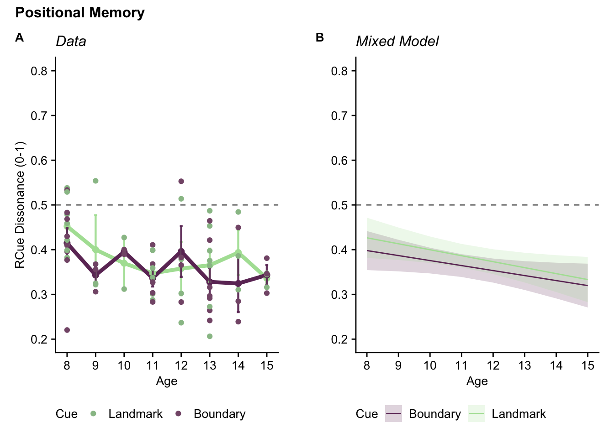

3 Analysis
3.1 Hypothesis
Hypothesis: Boundary-dependent object position memory will improve between 8 and 15 years of age, while landmark-dependent object memory will stay relatively constant.
3.2 Set up
Packages used for data analysis
library(here)
library(tidyverse)
library(broom)
library(lme4)
library(effsize)
library(scico)
library(cowplot)
library(gghalves)
library(ggnewscale)
library(ggeffects)
library(ggsignif)
library(patchwork)
library(Cairo)Functions written for this analysis
#function circleFun() generates locations of 100 points that are in shape of circle
#used for mapping out the arena in graphs
circleFun <- function(center = c(0,0), r = 27.5, npoints = 100){
tt <- seq(0,2*pi,length.out = npoints)
xx <- center[1] + r * cos(tt)
yy <- center[2] + r * sin(tt)
return(data.frame(x = xx, y = yy))
}
#function dist() calculates distance between given 2 points (loc1, loc2) while taking in their X and Y separately
dist <- function(loc1X, loc1Y, loc2X, loc2Y) {
d = sqrt(((loc1X-loc2X)**2)+((loc1Y-loc2Y)**2))
return(d)
}Following chunk checks whether a folder “figures” exists and potentially creates one
Reading in the two big files containing the full dataset
Sum_all <- read_delim(here("data" ,"Sum.txt"), delim = " ",
col_names = TRUE, col_types = "fdddddddfcdddddddddddddddddddddddddddddddddddddddd")
Traj <- read_delim(here("data" ,"Traj.txt"), delim = " ",
col_names = TRUE, col_types = "fddddddddddddcd") Creating a list of subject IDs from the full dataset
3.2.1 Timeout sessions
Identifying and filtering timeout sessions which are encoded as distance error = -1 (an impossible value)
#summary of timeout trials
timeout <- filter(Sum_all, error == -1)
print(sprintf("# timeout trials: %s", nrow(timeout)))## [1] "# timeout trials: 25"## [1] "# participants with timeout trials: 15"print(sprintf("average # timeout trials per participant with timeout trials: %s", nrow(timeout)/length(unique(timeout$ID))))## [1] "average # timeout trials per participant with timeout trials: 1.66666666666667"## [1] "average # timeout trials per participant: 0.657894736842105"3.2.2 Exclusion criteria
Participants are excluded based on performance in block 1 which is quantified using memory scores.
Explanation graph
Graph below visualizes the calculation of memory score for a single trial.
#data sorting
i_sub = subjects[5] #randomly selection one participant
XY <- filter(Traj, ID == i_sub) %>% select(ID, charX, charY) #filtering the full trajectory of the participant
XY <- XY[sample(nrow(XY), 1000), ] #selecting randomly 1000 frames from the participant's complete trajectory
graph_sub <- filter(Sum_all, ID == i_sub) #filtering the summary data of the participant
XY <- mutate(XY, distance = NA, outside = NA) #creating 2 new columsn for the trajectory data frame
for (i_point in 1:1000){
#calculating the distance between the random trajectory location and the true location of the cued bject in the given trial
dista = dist(XY$charX[i_point], XY$charY[i_point], graph_sub$objX[10], graph_sub$objY[10])
XY$distance[i_point] <- dista #adding the distance value to the dataframe
#evaluating whether the distance between the random location and the object is bigger or smaller than the distance error in the given trial
if (dista > graph_sub$error[10]) {XY$outside[i_point] <- TRUE} else {XY$outside[i_point] <- FALSE}
}
#final used data
outside <- filter(XY, outside == TRUE) #creating separate dataframe for locations that are further from the object than the distance error
inside <- filter(XY, outside == FALSE) #creating separate dataframe for locations that are closer to the object than the distance error
littleCircle <- circleFun(center=c(graph_sub$objX[10],graph_sub$objY[10] ), r=graph_sub$error[10]) #circle dividing closer/further locations
circle <- circleFun() #arena border visualization
#graph
mem_score <- ggplot(circle, aes(x, y)) +
geom_path() +
geom_path(subset(Traj, ID %in% i_sub), mapping=aes(x=charX, y=charY), size=0.2, alpha=0.7, linetype = 1) +
geom_point(data= outside, aes(x=charX, y=charY, color="Trajectory Locations Further"), size=0.7, alpha=0.7) +
geom_point(data=inside, aes(x=charX, y=charY, color="Trajectory Locations Closer"), size=0.7) +
geom_path(data=littleCircle, aes(x,y), color="#E58A50") +
geom_point(data=graph_sub, aes(x=objX[10], y=objY[10], color="True Object Location"), size = 2) +
geom_point(data=graph_sub, aes(x=remLocX[10], y=remLocY[10], color="Remembered Object Location"), size=2) +
theme_cowplot() +
theme(aspect.ratio=1,
axis.title = element_text(size=10), axis.text = element_text(size=10),
plot.title = element_text(size=12), plot.subtitle = element_text(size = 11)) +
labs(title = "Memory score calculation based on trajectory",
subtitle = paste("Memory score:", graph_sub$memoryScoreTraj[10]),
x= 'X (virtual meters)',
y= 'Y (virtual meters)') +
scale_color_manual(name = " ",
values= c("True Object Location" = "#F8DF77", "Remembered Object Location" = "#95413F",
"Trajectory Locations Closer" = "#E58750", "Trajectory Locations Further" = "#191900"))
ggsave(filename="memory_score_visual.pdf", plot=mem_score, units = "cm", width = 15, height = 11, dpi = "retina",
device = cairo_pdf, path = here("figures"))
ggsave("memory_score_visual.png", plot=mem_score, units = "cm", width = 15, height = 11,
dpi = "retina", device = "png", path = here("figures"))
mem_score
To be included in the analysis, participant’s memory scores from block 1 need to be significantly greater than the chance level 0.5.
exclusion <- c() #creating empty list that will contain the subject IDs that will be excluded
for (i_sub in subjects) {
score <- t.test(subset(Sum_all, ID==i_sub & block==1)$memoryScoreTraj,
mu=0.5, alternative = "greater") %>% tidy() #one-tailed t.test of block 1 memory scores against chance level 0.5
if (score$p.value > 0.05) {
exclusion <- c(exclusion, i_sub)
Sum_all <- filter(Sum_all, ID != i_sub)
}
}
print(sprintf("# participants excluded: %s", length(exclusion)))## [1] "# participants excluded: 2"## [1] "new overall sample size: 36"3.3 Descriptives
Age Distribution
Graph below shows the age distribution of our participants.
#summarising data to get a single line for each participant
age <- Sum_all %>%
group_by(ID, age) %>%
summarise(n = n(), .groups="drop")
ggplot(age, aes(x=age)) +
geom_bar(fill=scico(1, palette="acton", begin=0.8)) +
theme_cowplot() +
background_grid(major="y", minor="y") +
scale_x_continuous(breaks = c(8,9,10,11,12,13,14,15)) +
theme(legend.position = "none") +
labs(x="Age", y="Count", title="Distribution of age")Reaction Time
Next, we looked into reaction time (seconds between angle estimation and location estimation).
#average RT
reaction_time_dat <- Sum_all %>%
mutate(posResponse = secTrialRepl - secTrialEst) %>% #calculating the seconds between angle estimation and location estimation
group_by(ID, age) %>%
summarise(posiMemResponse = mean(posResponse), .groups="drop")
#raincloud graph showing distribution of RT, 1 point per participant
ggplot(reaction_time_dat, aes(x=0, y=posiMemResponse)) +
geom_half_violin(aes(x=-0.05), fill=scico(1, palette = "acton", begin = 0.45), alpha =0.5, color=NA) +
geom_point(aes(x=0.105, color=age), position = position_jitter(width =0.05, height = 0), shape=16, size = 2) +
scale_color_scico(palette = "acton") +
geom_boxplot(width = .08, outlier.shape = NA) +
theme_cowplot() +
ylab('RT') + xlab('') + ggtitle('Average reaction time for each participant across the entire experiment') +
theme(axis.text.x = element_blank(),
axis.ticks.x = element_blank(),
aspect.ratio =1,
plot.title = element_text(face="italic", size=12))#average RT and sd for the full dataset
reaction_time <- summarise(reaction_time_dat,
mean = mean(posiMemResponse), sd=sd(posiMemResponse), min=min(posiMemResponse), max=max(posiMemResponse))
reaction_time## # A tibble: 1 × 4
## mean sd min max
## <dbl> <dbl> <dbl> <dbl>
## 1 7.70 3.29 3.66 18.9print(sprintf("The average reaction time was %s seconds (sd = %s).", round(reaction_time$mean, 3), round(reaction_time$sd, 3)))## [1] "The average reaction time was 7.701 seconds (sd = 3.288)."Trial Length
We also calculated the average length of a single trial.
#average trial length for the full dataset
trial_length <- Sum_all %>%
summarise(mean = mean(trialLen), sd = sd(trialLen), min = min(trialLen), max = max(trialLen))
trial_length## # A tibble: 1 × 4
## mean sd min max
## <dbl> <dbl> <dbl> <dbl>
## 1 27.5 12.0 9.82 144.print(sprintf("The average trial length was %s seconds (sd = %s).", round(trial_length$mean, 3), round(trial_length$sd, 3)))## [1] "The average trial length was 27.48 seconds (sd = 12.032)."3.4 Block 1 Performance
This subsection of the analysis aims to answer whether the participants completed the basic task according to the instructions before any manipulation was introduced.
3.4.1 Recalled locations
First, we wanted to visualize the recalled locations relative to the object location so we calculated a new “error location” as if the cued object was at coordinate 0,0 inside the arena and created a heat map. The boundary of the arena is drawn in white.
#creating a smaller data frame for trials only in block 1 and calculating the new error coordinates (newX, newY)
heatMapDat <- Sum_all %>%
filter(block==1) %>%
select(ID, miniblock, objX, objY, remLocX, remLocY, cue, block) %>%
mutate(newX = remLocX-objX, newY = remLocY - objY)
#graphing
heat_map_B1 <- ggplot(heatMapDat, aes(x=newX, y=newY)) +
# creating a heat map
stat_density_2d(aes(fill = ..density..), geom = "raster", contour = FALSE, na.rm=TRUE) +
# setting a color palette from scico package
scale_fill_scico(palette = 'lajolla', begin=1, end=0, name = "Density") +
# adding individual error locations on top in white
geom_point(alpha=0.2, color="white", size=0.05) +
# adding the boundary of the arena (as a reference for distance)
geom_path(data = circle, aes(x, y), color="grey") +
# plotting the x and y axis on 0,0 to visualize the center of the arena
geom_hline(yintercept = 0) +
geom_vline(xintercept = 0) +
#changing titles
labs(x = "Error on X (vm)", y = "Error on Y (vm)", title="Centralised Distribution of Error") +
# aesthetical changes
theme_cowplot() +
theme(aspect.ratio=1,
plot.title = element_text(face="italic", size=12),
legend.title = element_text(size=10),
legend.text = element_text(size=10)) +
# adjusting axis limits and breaks
scale_x_continuous(limits = c(-33, 33), breaks = c(-30, -20, -10, 0, 10, 20, 30)) +
scale_y_continuous(limits = c(-33, 33), breaks = c(-30, -20, -10, 0, 10, 20, 30))
#saving the graph as pdf and png
ggsave("heatMap_block1.pdf", plot=heat_map_B1, units = "cm", width = 10, height = 10, dpi = "retina",
device = cairo_pdf, path = here("figures"))
ggsave("heatMap_block1.png", plot=heat_map_B1, units = "cm", width = 10, height = 10, dpi = "retina",
device = "png", path = here("figures"))
#show the graph
heat_map_B1
3.4.2 Memory score
#creating dataset that only contains data from block 1 and summarizing for each participant
summaryBlock1 <- Sum_all %>%
filter(block==1) %>%
group_by(ID, block) %>%
summarise(memoryScore = mean(memoryScoreTraj), distanceOther = mean(averageDist), distanceTrue = mean(error), .groups="drop")To tested whether the memory scores are above chance level 0.5, we ran one sample, one tail t-test.
## # A tibble: 1 × 8
## estimate statistic p.value parameter conf.low conf.high method alternative
## <dbl> <dbl> <dbl> <dbl> <dbl> <dbl> <chr> <chr>
## 1 0.812 26.1 7.53e-25 35 0.791 Inf One Sample t-test greaterRaincloud graph below visualizes the distribution of average memory scores in block 1 (1 point per participant)
mem_score_B1 <- ggplot(summaryBlock1, aes(x=block, y= memoryScore)) +
# violin plot
geom_half_violin(aes(x=block-0.06), fill=scico(1, palette = "lajolla", begin = 0.45), alpha =0.5, color=NA) +
# single subject data points (1 per participant) with horizontal jitter
geom_point(aes(x=block+0.08), position = position_jitter(width =0.01, height = 0), shape=16, size = 1) +
# boxplot of distribution (median, 1st and 3rd quartile)
geom_boxplot(width = .05, outlier.shape = NA) +
# adding plot of mean and SEM
stat_summary(fun = mean, geom = "point", size=1, shape = 16,
position = position_nudge(-.06), colour = "black") +
stat_summary(fun.data = mean_se, geom = "errorbar",
position = position_nudge(-.06), colour = "black", width = 0, size = 0.5) +
# adding horizontal line at chance level 0.5 with annotation
geom_hline(yintercept = 0.5, linetype=2) +
annotate("text", label="chance = 0.5", x=1.2, y=0.52, size=3) +
# correcting labels
labs(x = '', y = 'Memory Score (0-1)', title = 'Memory score') +
# aesthetical changes
theme_cowplot() +
theme(axis.text.x = element_blank(),
axis.ticks.x = element_blank(),
aspect.ratio = 1,
plot.title = element_text(face="italic", size=12))
#saving the graph as pdf and png
ggsave("memory_score_B1.pdf", plot=mem_score_B1, units = "cm", width = 10, height = 7,
dpi = "retina", device = cairo_pdf, path = here("figures"))
ggsave("memory_score_B1.png", plot=mem_score_B1, units = "cm", width = 10, height = 7,
dpi = "retina", device = "png", path = here("figures"))
#show the graph
mem_score_B1
Assembly of graphs for positional memory in block 1.
# using patchwork package to combine 2 separate graphs
memory_B1 <- mem_score_B1 + heat_map_B1 &
theme(axis.text = element_text(size=10),
axis.title = element_text(size=10),
plot.title = element_text(size=12)) &
plot_annotation(title = 'Memory Performance in Block 1',
theme = theme(plot.title = element_text(size = 12, face="bold")))
# saving the compiled graphs as pdf and png
ggsave("Block1_loc.pdf", plot=memory_B1, units = "cm", width = 15.9, height = 10, dpi = "retina", device = cairo_pdf, path = here("figures"))
ggsave("Block1_loc.png", plot=memory_B1, units = "cm", width = 15.9, height = 10, dpi = "retina", device = "png", path = here("figures"))
# show the compiled graphs
memory_B13.4.3 Distance from remembered locations to other locations
We wanted to check that participants tried to recall the location of the correct object and did not mistake it with other 3 objects on regular basis so we calculated the average distance from the recalled location to the other objects’ locations (distanceToOther1 + distanceToOther2 + distanceToOther3 / 3) and compared it to the distance error to the true location of the cued object. This calculation is visualized in a graph below for a single example trial.
#filtering for only trials in 1 miniblock for simplicity
graph_sub <- graph_sub %>%
filter(objectTrial == 5)
distance_other <- ggplot(circle, aes(x, y)) +
# creating arena boundary
geom_path() +
# true location of cued object
geom_point(data=graph_sub, aes(x=objX[2], y=objY[2], color="True Object Location"), size = 2.5) +
# line visualizing the distance error (between recalled location and true location)
geom_segment(data=graph_sub, aes(x=remLocX[2], y=remLocY[2], xend= objX[2], yend= objY[2], color="True Object Location"), alpha=.5) +
# location of other object 1 & distance to the recalled location
geom_point(data=graph_sub, aes(x=remLocX[1], y=remLocY[1], color="Other Object Location"), size=2.5) +
geom_segment(data=graph_sub, aes(x=remLocX[1], y=remLocY[1], xend= remLocX[2], yend= remLocY[2], color="Other Object Location"), alpha=.5) +
# location of other object 2 & distance to the recalled location
geom_point(data=graph_sub, aes(x=remLocX[3], y=remLocY[3], color="Other Object Location"), size=2.5) +
geom_segment(data=graph_sub, aes(x=remLocX[3], y=remLocY[3], xend= remLocX[2], yend= remLocY[2], color="Other Object Location"), alpha=.5) +
# location of other object 3 & distance to the recalled location
geom_point(data=graph_sub, aes(x=remLocX[4], y=remLocY[4], color="Other Object Location"), size=2.5) +
geom_segment(data=graph_sub, aes(x=remLocX[4], y=remLocY[4], xend= remLocX[2], yend= remLocY[2], color="Other Object Location"), alpha=.5) +
# recalled location of the cued object
geom_point(data=graph_sub, aes(x=remLocX[2], y=remLocY[2], color="Remembered Object Location"), size=2.5) +
# aesthetical changes
theme_cowplot() +
theme(aspect.ratio=1,
axis.title = element_text(size=10), axis.text = element_text(size=10),
plot.title = element_text(size=12), plot.subtitle = element_text(size = 11)) +
# changing labels and title
labs(title = "Distance from remembered location to other locations",
subtitle = paste(sprintf("Distance Error: %s vm", graph_sub$error[2]),
sprintf("Average Distance to Other Objects: %s vm", round(graph_sub$averageDist[2], 2)), sep="\n"),
x= 'X (vm)', y= 'Y (vm)') +
# specifying colors manually
scale_color_manual(name = " ",
values= c("True Object Location" = "#883E3A", "Remembered Object Location" = "#E37D50",
"Other Object Location" = "#F6D868"))
# saving graph as pdf and png
ggsave(filename="distance_other_visual.pdf", plot=distance_other, units = "cm", width = 15, height = 11, dpi = "retina",
device = cairo_pdf, path = here("figures"))
ggsave("distance_other_visual.png", plot=distance_other, units = "cm", width = 15, height = 11,
dpi = "retina", device = "png", path = here("figures"))
# show the graph
distance_other
To test this, we ran paired t-test which showed that on average there is a difference between these 2 distances.
## # A tibble: 1 × 8
## estimate statistic p.value parameter conf.low conf.high method alternative
## <dbl> <dbl> <dbl> <dbl> <dbl> <dbl> <chr> <chr>
## 1 10.8 15.9 1.31e-17 35 9.43 12.2 Paired t-test two.sidedGraph visualizing this comparison is below.
#necessary pivoting of the dataset for the following graph
summaryBlock1 <- pivot_longer(summaryBlock1, cols=c(distanceTrue, distanceOther))distance_B1 <- ggplot(summaryBlock1, aes(x=name, y= value)) +
# specifying axis limits and breaks
scale_x_discrete(limits = c('distanceTrue', 'distanceOther'),
labels = c('to Correct Location', 'to Other Object Locations')) +
scale_y_continuous(limits = c(0, 28), breaks = c(5, 10, 15, 20 , 25)) +
# violin plot
gghalves::geom_half_violin(data=summaryBlock1 %>% filter(name=="distanceOther"),
position=position_nudge(+0.2), aes(fill=name),alpha =0.7, color=NA, side="r") +
gghalves::geom_half_violin(data=summaryBlock1 %>% filter(name=="distanceTrue"),
position=position_nudge(-0.2), aes(fill=name),alpha =0.7, color=NA, side="l") +
# scico palette lajolla for violin plot fill
scale_fill_scico_d(palette = 'lajolla', begin=0.2, end=0.75) +
# single subject data points (1 per participant)
geom_point(shape=16, size = 1) +
# boxplot of distribution (median, 1st and 3rd quartile)
geom_boxplot(data=summaryBlock1 %>% filter(name=="distanceOther"),
position=position_nudge(+0.1), width = .1, outlier.shape = NA) +
geom_boxplot(data=summaryBlock1 %>% filter(name=="distanceTrue"),
position=position_nudge(-0.1), width = .1, outlier.shape = NA) +
# adding plot of mean and SEM
stat_summary(data=summaryBlock1 %>% filter(name=="distanceOther"),
position=position_nudge(+0.2), fun = mean, geom = "point", size=1, shape = 16, colour = "black") +
stat_summary(data=summaryBlock1 %>% filter(name=="distanceOther"),
position=position_nudge(+0.2), fun.data = mean_se, geom = "errorbar", colour = "black", width = 0, size = 0.5) +
stat_summary(data=summaryBlock1 %>% filter(name=="distanceTrue"),
position=position_nudge(-0.2), fun = mean, geom = "point", size=1, shape = 16, colour = "black") +
stat_summary(data=summaryBlock1 %>% filter(name=="distanceTrue"),
position=position_nudge(-0.2), fun.data = mean_se, geom = "errorbar", colour = "black", width = 0, size = 0.5) +
# line connecting individual participants' values
geom_line(aes(group=ID), alpha=0.5) +
# changing title and labels
labs(x = " ", y = "Distance (vm)", subtitle = "In Block 1",
title = "Distance from Remembered Location to Object Locations") +
# aesthetical changes
theme_cowplot() +
theme(legend.position = "none",
plot.title = element_text(size=12, lineheight = 1.1),
plot.subtitle = element_text(face = "bold", lineheight = 1.1),
aspect.ratio = 0.55,
axis.title = element_text(size=12)) +
# visualizing the significance of the t-test
geom_signif(comparisons = list(c("distanceTrue", "distanceOther")), test="t.test",
test.args=list(alternative = "two.sided", var.equal = FALSE, paired=TRUE),
map_signif_level = TRUE, tip_length = 0, extend_line = 0.045, y_position = 26)
# saving the graph as pdf and png
ggsave("distances_B1.pdf", plot=distance_B1, units = "cm", width = 13, height = 10, dpi = "retina", device = cairo_pdf, path = here("figures"))
ggsave("distances_B1.png", plot=distance_B1, units = "cm", width = 13, height = 10, dpi = "retina", device = "png", path = here("figures"))
# show the graph
distance_B1
3.5 Cue Differences
Next we wanted to investigate whether the participants followed the cues in block 2-4 after landmark and landmark-dependent object movement. Also, is there performance difference between landmark- vs boundary-dependent objects?
3.5.1 Relative Influence
Relative Influence has been used in the field for over a decade now, initially introduced in paper by Doeller, King and Burgess (2008).
“For blocks 2–4, we attempted to quantify the relative influence of either cue on each response location. In a pilot study, we noticed that incorrect responses tended to be clustered around locations previously associated with the incorrect cue: either during block 1 or during the immediately preceding block. Accordingly, we calculated the relative influence of boundary versus landmark in blocks 2–4 as d L/(d L + d B), where d L is the distance of the response from the location predicted by the landmark and d B is the distance from the location predicted by the boundary. This measure varies between 0 (using the landmark) and 1 (using the boundary). On the basis of our pilot data the incorrect cue potentially predicts two different locations in blocks 3 and 4 (reflecting the object’s positions relative to it in the preceding block and in block 1): we used whichever was closest to the response location.”
Explanation Graph
Below, the calculation of relative influence score is visualised.
#loading a data from block 2-4 for a single participant
graph_sub <- filter(Sum_all, ID == subjects[5] & block == 4 & trial==15)
relativeInf_graph <- ggplot(data=graph_sub) +
# location predicted by landmark
geom_point(aes(x=landmarkCuePosX, y=landmarkCuePosY, color="Location Predicted by Landmark"), size = 2.5) +
# line visualizing the distance error (between recalled location and landmark-predicted location)
geom_segment(aes(x=remLocX, y=remLocY, xend= landmarkCuePosX, yend=landmarkCuePosY,
color="Location Predicted by Landmark"), alpha=.5) +
# adding dL label
annotate("text", label="dL", x=-7.8, y=-9.5, size=4, color="#C6F1B1", fontface =2) +
# location predicted by boundary
geom_point(aes(x=boundaryCuePosX, y=boundaryCuePosY, color="Location Predicted by Boundary"), size = 2.5) +
# line visualizing the distance error (between recalled location and true location)
geom_segment(aes(x=boundaryCuePosX, y=boundaryCuePosY, xend= remLocX, yend= remLocY,
color="Location Predicted by Boundary"), alpha=.5) +
# adding dB label
annotate("text", label="dB", x=10, y=3, size=4, color="#592758", fontface =2) +
#recalled location
geom_point(aes(x=remLocX, y=remLocY, color = "Remembered Object Location"), size = 2.5) +
#landmark location
geom_point(aes(x=landmarkX, y=landmarkY), shape = 15, color = "#94A98F", size=3) +
annotate("text", label="Landmark", x= -16, y = -3.5, size=3.5, color= "#94A98F") +
# creating arena boundary
geom_path(data=circle, aes(x, y)) +
# aesthetical changes
theme_cowplot() +
theme(aspect.ratio=1,
axis.title = element_text(size=10), axis.text = element_text(size=10),
plot.title = element_text(size=12), plot.subtitle = element_text(size = 11)) +
# changing labels and title
labs(title = "Relative Influence Calculation",
subtitle = paste("dL / (dL + dB) ",
sprintf("Relative Influence: %s ", round(graph_sub$relativeInfluence, 2)), sep="\n"),
x= 'X (vm)', y= 'Y (vm)') +
# specifying colors manually
scale_color_manual(name = " ",
values= c("Location Predicted by Boundary" = "#592758", "Location Predicted by Landmark" = "#C6F1B1",
"Remembered Object Location" = "red"))
# saving graph as pdf and png
ggsave(filename="relative_influence_visual.pdf", plot=relativeInf_graph, units = "cm", width = 15, height = 11, dpi = "retina",
device = cairo_pdf, path = here("figures"))
ggsave("relative_influence_visual.png", plot=relativeInf_graph, units = "cm", width = 15, height = 11,
dpi = "retina", device = "png", path = here("figures"))
# show the graph
relativeInf_graph
First, let’s create a subset dataframe that has data only from block 2-4 and get rid of us currently unnecessary columns. Then we summarize relative influence score, correct cue influence and distance error.
subset_RI <- Sum_all %>%
filter(block!=1) %>%
select(-object, -sec2Beg, -sec2Est, -dropTime, -sec2End, -trialLen, -secTrialEst)
relativeInfluenceBlocks <- subset_RI %>%
group_by(ID, cue) %>%
summarise(relativeInf = mean(relativeInfluence),
cueDis = mean(cueDissonance),
distanceError = mean(error),
age=unique(age),
.groups="drop") T-Tests
As score 0.5 points towards location between the location predicted by landmark and location predicted by boundary, we ran a one sample, one tail t-test to test whether the relative scores for landmark-dependent objects are less than 0.5.
t.test(subset(relativeInfluenceBlocks, cue=="landmark")$relativeInf,
mu = 0.5, alternative = "less") %>% tidy()## # A tibble: 1 × 8
## estimate statistic p.value parameter conf.low conf.high method alternative
## <dbl> <dbl> <dbl> <dbl> <dbl> <dbl> <chr> <chr>
## 1 0.384 -8.20 5.76e-10 35 -Inf 0.408 One Sample t-test lessAfter we ran a one sample, one tail t-test to test whether the relative scores for boundary-dependent objects are higher than 0.5.
t.test(subset(relativeInfluenceBlocks, cue=="boundary")$relativeInf,
mu = 0.5, alternative = "greater") %>% tidy()## # A tibble: 1 × 8
## estimate statistic p.value parameter conf.low conf.high method alternative
## <dbl> <dbl> <dbl> <dbl> <dbl> <dbl> <chr> <chr>
## 1 0.638 10.2 2.41e-12 35 0.615 Inf One Sample t-test greaterWe also tested these two groups against each other to see if the scores are significantly different.
t.test(subset(relativeInfluenceBlocks, cue=="boundary")$relativeInf,
subset(relativeInfluenceBlocks, cue=="landmark")$relativeInf, paired=TRUE) %>% tidy()## # A tibble: 1 × 8
## estimate statistic p.value parameter conf.low conf.high method alternative
## <dbl> <dbl> <dbl> <dbl> <dbl> <dbl> <chr> <chr>
## 1 0.254 10.7 1.57e-12 35 0.206 0.302 Paired t-test two.sidedGraph
This difference in relative influence scores between boundary-dependent objects and landmark-dependent objects is visualized in a graph below.
rel_Inf <- ggplot(relativeInfluenceBlocks, aes(x=cue, y=relativeInf)) +
# changing labels and titles
scale_x_discrete(labels = c('Boundary', 'Landmark')) +
labs(x = " ", y = "Relative Influence (0-1)",
title = "Positional Memory") +
# violin plots
gghalves::geom_half_violin(data=relativeInfluenceBlocks %>% filter(cue=="landmark"),
position=position_nudge(+0.2), aes(fill=cue),alpha =0.7, color=NA, side="r") +
gghalves::geom_half_violin(data=relativeInfluenceBlocks %>% filter(cue=="boundary"),
position=position_nudge(-0.2), aes(fill=cue),alpha =0.7, color=NA, side="l") +
# scico palette tokyo
scale_fill_scico_d(palette = 'tokyo', begin=0.15, end=0.85) +
# single subject data points (1 per participant)
geom_point(shape=16, size = 1) +
# line connecting individual participants' values
geom_line(aes(group=ID), alpha=0.5) +
# boxplot of distribution (median, 1st and 3rd quartile)
geom_boxplot(data=relativeInfluenceBlocks %>% filter(cue=="landmark"),
position=position_nudge(+0.1), width = .1, outlier.shape = NA) +
geom_boxplot(data= relativeInfluenceBlocks %>% filter(cue=="boundary"),
position=position_nudge(-0.1), width = .1, outlier.shape = NA) +
# adding plot of mean and SEM
stat_summary(data=relativeInfluenceBlocks %>% filter(cue=="landmark"),
position=position_nudge(+0.2), fun = mean, geom = "point", size=1, shape = 16, colour = "black") +
stat_summary(data=relativeInfluenceBlocks %>% filter(cue=="landmark"),
position=position_nudge(+0.2), fun.data = mean_se, geom = "errorbar", colour = "black", width = 0, size = 0.5) +
stat_summary(data=relativeInfluenceBlocks %>% filter(cue=="boundary"),
position=position_nudge(-0.2), fun = mean, geom = "point", size=1, shape = 16, colour = "black") +
stat_summary(data=relativeInfluenceBlocks %>% filter(cue=="boundary"),
position=position_nudge(-0.2), fun.data = mean_se, geom = "errorbar", colour = "black", width = 0, size = 0.5) +
# aesthetical changes
theme_cowplot() +
theme(legend.position = "none",
plot.title = element_text(size=12, lineheight = 1.1),
axis.title = element_text(size=10)) +
# visualizing the significance level of the t-test
geom_signif(comparisons = list(c("landmark", "boundary")), test="t.test",
test.args=list(alternative = "two.sided", paired=TRUE),
map_signif_level = TRUE, tip_length = 0, extend_line = 0.045, y_position = 0.85) +
# adding line at 0.5 (not-following either cue)
geom_hline(yintercept=0.5, linetype=2, alpha=0.6) +
# changing limits and breaks of y-axis
scale_y_continuous(limits=c(0.1, 0.9), breaks = c(0.1,0.2,0.3,0.4,0.5,0.6,0.7,0.8,0.9)) +
# adding annotation of significance level of individual t-tests
annotate("text", label="***", size=3, y=0.8, x=0.9, fontface =2) +
annotate("text", label="***", size=3, y=0.15, x=2.1, fontface =2)
# saving graphs as pdf and png
ggsave("relativeInfluence.pdf", plot=rel_Inf, units = "cm", width = 15, height = 11, dpi = "retina", device = cairo_pdf, path = here("figures"))
ggsave("relativeInfluence.png", plot=rel_Inf, units = "cm", width = 15, height = 11, dpi = "retina", device = "png", path = here("figures"))
# show the graph
rel_Inf
Mixed Models
As a first step towards building a full mixed effects model, we tested a simpliest version with only cue as a fixed effect and a random slope and random intercepts for participants. We did not use cue as a factor but in a recoded version of landmark = -1 and boundary = 1.
formulaCue <- "relativeInfluence ~ cueMM + (1+cueMM|ID)"
modelCue <- lme4::lmer(formula = formulaCue, data=subset_RI)
summary(modelCue)## Linear mixed model fit by REML ['lmerMod']
## Formula: relativeInfluence ~ cueMM + (1 + cueMM | ID)
## Data: subset_RI
##
## REML criterion at convergence: -512.9
##
## Scaled residuals:
## Min 1Q Median 3Q Max
## -2.9647 -0.7254 -0.0185 0.6896 3.2229
##
## Random effects:
## Groups Name Variance Std.Dev. Corr
## ID (Intercept) 0.0009096 0.03016
## cueMM 0.0042558 0.06524 -0.09
## Residual 0.0406835 0.20170
## Number of obs: 1691, groups: ID, 36
##
## Fixed effects:
## Estimate Std. Error t value
## (Intercept) 0.510803 0.007026 72.70
## cueMM 0.127014 0.011931 10.65
##
## Correlation of Fixed Effects:
## (Intr)
## cueMM -0.055To test, whether cue is a significant predictor we ran a likelihood ratio test comparing our simpliest model and a model containing only random effects.
formulaCueControl<- "relativeInfluence ~ 1 + (1+cueMM|ID)"
modelCueControl <- lme4::lmer(formula = formulaCueControl, data=subset_RI)
ratioCue <- anova(modelCue, modelCueControl)## refitting model(s) with ML (instead of REML)## Data: subset_RI
## Models:
## modelCueControl: relativeInfluence ~ 1 + (1 + cueMM | ID)
## modelCue: relativeInfluence ~ cueMM + (1 + cueMM | ID)
## npar AIC BIC logLik deviance Chisq Df Pr(>Chisq)
## modelCueControl 5 -466.00 -438.84 238 -476.00
## modelCue 6 -515.99 -483.39 264 -527.99 51.989 1 5.581e-13 ***
## ---
## Signif. codes: 0 '***' 0.001 '**' 0.01 '*' 0.05 '.' 0.1 ' ' 13.5.2 Distance Error Differences
Previously, Julian et al (2019) showed that there is a difference in distance error between boundary-dependent and landmark-dependent objects so we ran a paired t-test to replicate these findings in this new participant demographic.
t.test(subset(relativeInfluenceBlocks, cue=="boundary")$distanceError,
subset(relativeInfluenceBlocks, cue=="landmark")$distanceError, paired=TRUE) %>% tidy()## # A tibble: 1 × 8
## estimate statistic p.value parameter conf.low conf.high method alternative
## <dbl> <dbl> <dbl> <dbl> <dbl> <dbl> <chr> <chr>
## 1 0.708 1.61 0.117 35 -0.186 1.60 Paired t-test two.sidedWe did not replicate these findings and the lack of difference is evident in the graph below.
cue_Dist <- ggplot(relativeInfluenceBlocks, aes(x=cue, y= distanceError)) +
# changing labels and title
scale_x_discrete(labels = c('Boundary', 'Landmark')) +
labs(x = " ", y = "Distance Error (vm)", title = "Positional Memory") +
# violin plot
gghalves::geom_half_violin(data=relativeInfluenceBlocks %>% filter(cue=="landmark"),
position=position_nudge(+0.2), aes(fill=cue),alpha =0.7, color=NA, side="r") +
gghalves::geom_half_violin(data=relativeInfluenceBlocks %>% filter(cue=="boundary"),
position=position_nudge(-0.2), aes(fill=cue),alpha =0.7, color=NA, side="l") +
# scico palette tokyo
scale_fill_scico_d(palette = 'tokyo', begin=0.15, end=0.85) +
# single subject data points (1 per participant)
geom_point(shape=16, size = 1) +
# line connecting individual participants' values
geom_line(aes(group=ID), alpha=0.5) +
# boxplot of distribution (median, 1st and 3rd quartile)
geom_boxplot(data=relativeInfluenceBlocks %>% filter(cue=="landmark"),
position=position_nudge(+0.1), width = .1, outlier.shape = NA) +
geom_boxplot(data=relativeInfluenceBlocks %>% filter(cue=="boundary"),
position=position_nudge(-0.1), width = .1, outlier.shape = NA) +
# adding plot of mean and SEM
stat_summary(data=relativeInfluenceBlocks %>% filter(cue=="landmark"),
position=position_nudge(+0.2), fun = mean, geom = "point", size=1, shape = 16, colour = "black") +
stat_summary(data=relativeInfluenceBlocks %>% filter(cue=="landmark"),
position=position_nudge(+0.2), fun.data = mean_se, geom = "errorbar", colour = "black", width = 0, size = 0.5) +
stat_summary(data=relativeInfluenceBlocks %>% filter(cue=="boundary"),
position=position_nudge(-0.2), fun = mean, geom = "point", size=1, shape = 16, colour = "black") +
stat_summary(data=relativeInfluenceBlocks %>% filter(cue=="boundary"),
position=position_nudge(-0.2), fun.data = mean_se, geom = "errorbar", colour = "black", width = 0, size = 0.5) +
# aesthetical changes
theme_cowplot() +
theme(legend.position = "none",
plot.title = element_text(size=12, lineheight = 1.1),
aspect.ratio = 0.55,
axis.title = element_text(size=12)) +
# visualizing the significance level of the t-test
geom_signif(comparisons = list(c("landmark", "boundary")), test="t.test",
test.args=list(alternative = "two.sided", paired=TRUE),
map_signif_level = TRUE, tip_length = 0, extend_line = 0.045, y_position = 26)
# saving the graph as pdf and png
ggsave("distancesError.pdf", plot=cue_Dist, units = "cm", width = 15, height = 11, dpi = "retina", device = cairo_pdf, path = here("figures"))
ggsave("distancesError.png", plot=cue_Dist, units = "cm", width = 15, height = 11, dpi = "retina", device = "png", path = here("figures"))
# show the plot
cue_Dist
3.6 Miniblocks Learning
3.6.1 Graphs
The graph below shows the relative influence scores averaged for each miniblock in block 2-4 (averaging over 6 scores for each miniblock)
# necessary summarizing for the graph below
summary_miniblock <- subset_RI %>%
group_by(ID, miniblock, cue) %>%
summarise(relativeInf = mean(relativeInfluence),
riSD = sd(relativeInfluence),
.groups = "drop")
g_mini <- ggplot(summary_miniblock, aes(miniblock, relativeInf, group=interaction(cue, ID), color=cue)) +
# connects the mean values for each participant
geom_line(size=0.8, alpha = 0.3) +
# overall mean and se
stat_summary(fun=mean, aes(group=cue), geom="point", size=2) +
stat_summary(fun.data=mean_se, aes(group=cue), geom="errorbar", size=0.8, width=0.1, alpha=0.95) +
# connects the overall mean to show the improvement
stat_summary(fun=mean, aes(group=cue), geom="line", size = 1.5) +
# line showing 0.5 neutral relative score for reference
geom_hline(yintercept = 0.5, linetype = 2) +
# changing labels and titles
labs(x= "Miniblock", y = "Relative Influence (0-1)", title = "Averaged across Blocks", color = "Cue") +
# aesthitical changes
theme_cowplot() +
# assigning scico palette tokyo as a color palatte
scale_color_scico_d(palette = 'tokyo', begin=0.2, end=0.8, labels = c("Boundary", "Landmark")) +
# changing limits and breaks on both axis
scale_y_continuous(limits = c(0,1), breaks = c(0, 0.25, 0.5, 0.75, 1)) +
scale_x_continuous(limits = c(0.5, 4.5), breaks = c(1,2,3,4))
#show the graph
g_miniThe graph below shows the relative influence scores for each miniblock throughout block 2-4 (averaging only over 2 scores per miniblock)
#necessary summarizing for the graph below
summary_objectTrial <- subset_RI %>%
group_by(ID, objectTrial, cue) %>%
summarise(relativeInf = mean(relativeInfluence),
riSD = sd(relativeInfluence),
.groups = "drop")
g_objTrial <- ggplot(summary_objectTrial, aes(objectTrial, relativeInf, group=interaction(cue, ID), color=cue)) +
# connects the mean values for each participant within each block
geom_line(data= subset(summary_objectTrial, objectTrial < 9), size=0.8, alpha = 0.3) +
geom_line(data= subset(summary_objectTrial, objectTrial < 13 & objectTrial > 8), size=0.8, alpha = 0.3) +
geom_line(data= subset(summary_objectTrial, objectTrial > 12), size=0.8, alpha = 0.3) +
# overall mean and se
stat_summary(fun=mean, aes(group=cue), geom="point", size=2) +
stat_summary(fun.data=mean_se, aes(group=cue),
geom="errorbar", size=0.8, width=0.1, alpha=0.95, position = position_nudge(x=0.01)) +
# line connecting the average values within each block
stat_summary(data = subset(summary_objectTrial, objectTrial < 9), fun=mean, aes(group=cue), geom="line", size = 1.5) +
stat_summary(data = subset(summary_objectTrial, objectTrial < 13 & objectTrial > 8), fun=mean, aes(group=cue), geom="line", size = 1.5) +
stat_summary(data = subset(summary_objectTrial, objectTrial > 12), fun=mean, aes(group=cue), geom="line", size = 1.5) +
# assigning scico palette tokyo as a color palatte
scale_color_scico_d(palette = 'tokyo', begin=0.2, end=0.8, labels = c("Boundary", "Landmark")) +
# line showing 0.5 neutral relative score for reference
geom_hline(yintercept = 0.5, linetype = 2) +
# adding a vertical lines showing the start of a new block with a proper label
geom_vline(xintercept = 4.9, alpha = 0.7, linetype=3) +
annotate("text", label = "Block 2", x = 5.6, y = 1, size = 4) +
geom_vline(xintercept = 8.9, alpha = 0.7, linetype=3) +
annotate("text", label = "Block 3", x = 9.6, y = 1, size = 4) +
geom_vline(xintercept = 12.9, alpha = 0.7, linetype=3) +
annotate("text", label = "Block 4", x = 13.6, y = 1, size = 4) +
# changing labels and titles
labs(x= "Miniblock", y = "Relative Influence (0-1)", title= "Separately per Block", color= "Cue") +
# changing limits and breaks and its labels of both axis
scale_y_continuous(breaks = c(0, 0.25, 0.5, 0.75, 1), limits = c(0,1)) +
scale_x_continuous(breaks = c(5, 6, 7, 8, 9, 10, 11, 12, 13, 14, 15, 16),
labels = c("1", "2", "3", "4", "1", "2", "3", "4", "1", "2", "3", "4")) +
# aesthetical changes
theme_cowplot()
#show the graph
g_objTrialThe two graphs created above are composed into a single layout for better, more wholesome visualisation.
# specifying the layout
layout <- "
AAAAAA
AAAAAA
AAAAAA
BB####
BB#C##
BB####
"
# assigning a variable for legend
g_leg <- guide_area()
g_min <- g_objTrial + g_mini + g_leg +
# indicating the layout and gathering the legends
plot_layout(design = layout, guides = "collect") &
# unifying aesthetical aspects, mainly text size and style
theme(axis.title = element_text(size = 10), axis.text = element_text(size=10),
legend.title = element_text(size=10), legend.text = element_text(size=10),
plot.title = element_text(size=12, face="italic"),
plot.tag = element_text(size = 10, face="bold")) &
# adding title and tags
plot_annotation(title = 'Positional Memory',
theme = theme(plot.title = element_text(size = 12, face="bold")),
tag_levels = list(c('A', 'B')))
# savvign the assembly as pd and png
ggsave("relativeInfluence_min.pdf", plot=g_min, units = "cm", width = 15.9, height = 13,
dpi = "retina", device = cairo_pdf, path = here("figures"))
ggsave("relativeInfluence_min.png", plot=g_min, units = "cm", width = 15.9, height = 13,
dpi = "retina", device = "png", path = here("figures"))
# show the assembled graphs
g_min
3.6.2 Miniblock 1
We noticed that there is a tendency for relative influence score to be above regardless cue-dependency so we wanted to test this statistically so we ran a one-sided, one sample t-test against 0.5.
# summarizing by ID for all miniblocks 1 (in block 2-4)
sub_mini_1 <- subset_RI %>%
filter(miniblock == 1) %>%
group_by(ID) %>%
summarise(relInfluence = mean(relativeInfluence), .groups ="drop")
# one-tailed, one sample t-test
t.test(sub_mini_1$relInfluence, mu=0.5, alternative = "greater") %>% tidy()## # A tibble: 1 × 8
## estimate statistic p.value parameter conf.low conf.high method alternative
## <dbl> <dbl> <dbl> <dbl> <dbl> <dbl> <chr> <chr>
## 1 0.577 6.12 0.000000269 35 0.555 Inf One Sample t-test greaterAs it seems the relative influence in miniblock is indeed higher than 0.5, therefore they are more likely following boundary as a cue (its old location). Next, we wanted to ensure that there is indeed no difference between the relative influence score between landmark-dependent and boundary-dependent objects in miniblock 1.
# summarizing by ID and cue for all miniblocks 1 (in blocks 2-4)
sub_mini_cue <- subset_RI %>%
filter(miniblock == 1) %>%
group_by(ID, cue) %>%
summarise(relInfluence = mean(relativeInfluence), .groups ="drop")
# two-tailed, paired sample t-test
t.test(subset(sub_mini_cue, cue=="landmark")$relInfluence, subset(sub_mini_cue, cue=="boundary")$relInfluence, paired=TRUE) %>% tidy()## # A tibble: 1 × 8
## estimate statistic p.value parameter conf.low conf.high method alternative
## <dbl> <dbl> <dbl> <dbl> <dbl> <dbl> <chr> <chr>
## 1 -0.0131 -0.483 0.632 35 -0.0681 0.0419 Paired t-test two.sided3.6.3 Mixed Models
Relative Influence
To test the learning throughout a block, we ran mixed effect model with interaction between cue and miniblock (centered) and added interaction between cue and miniblock as a random slope.
formulaMiniblocksCue <- "relativeInfluence ~ cueMM*mini + (1+mini:cueMM|ID)"
modelMiniblocksCue <- lme4::lmer(formula = formulaMiniblocksCue, data=subset_RI)
summary(modelMiniblocksCue)## Linear mixed model fit by REML ['lmerMod']
## Formula: relativeInfluence ~ cueMM * mini + (1 + mini:cueMM | ID)
## Data: subset_RI
##
## REML criterion at convergence: -599.8
##
## Scaled residuals:
## Min 1Q Median 3Q Max
## -3.05149 -0.70240 -0.00336 0.72515 3.14230
##
## Random effects:
## Groups Name Variance Std.Dev. Corr
## ID (Intercept) 0.0009218 0.03036
## mini:cueMM 0.0002904 0.01704 0.08
## Residual 0.0393939 0.19848
## Number of obs: 1691, groups: ID, 36
##
## Fixed effects:
## Estimate Std. Error t value
## (Intercept) 0.511043 0.006996 73.05
## cueMM 0.127338 0.004828 26.38
## mini -0.026550 0.004317 -6.15
## cueMM:mini 0.058000 0.005169 11.22
##
## Correlation of Fixed Effects:
## (Intr) cueMM mini
## cueMM 0.005
## mini 0.000 -0.004
## cueMM:mini 0.029 0.000 0.006To test the significance of the interaction, we ran a likelihood ratio test comparing our model and a model with both cue and miniblock as predictors but without the interaction.
#control model for interaction
formulaMiniblocksControl <- "relativeInfluence ~ cueMM+mini + (1+mini:cueMM|ID)"
modelMiniblocksControl <- lme4::lmer(formula = formulaMiniblocksControl, data=subset_RI)
#likelihood ratio test
ratioMini <- anova(modelMiniblocksCue, modelMiniblocksControl)## refitting model(s) with ML (instead of REML)## Data: subset_RI
## Models:
## modelMiniblocksControl: relativeInfluence ~ cueMM + mini + (1 + mini:cueMM | ID)
## modelMiniblocksCue: relativeInfluence ~ cueMM * mini + (1 + mini:cueMM | ID)
## npar AIC BIC logLik deviance Chisq Df Pr(>Chisq)
## modelMiniblocksControl 7 -565.96 -527.92 289.98 -579.96
## modelMiniblocksCue 8 -618.52 -575.06 317.26 -634.52 54.565 1 1.504e-13 ***
## ---
## Signif. codes: 0 '***' 0.001 '**' 0.01 '*' 0.05 '.' 0.1 ' ' 1Cue specific analysis
To check whether miniblocks are a significant predictor without the cue we ran a model and likelihood ratio test separately for landmark-dependent and boundary-dependent objects.
#landmark-dependent objects
formulaMiniblocks <- "relativeInfluence ~ mini + (1+mini|ID)"
modelMiniblocksLandmark <- lme4::lmer(formula = formulaMiniblocks, data=subset(subset_RI, cue=="landmark"))
summary(modelMiniblocksLandmark)## Linear mixed model fit by REML ['lmerMod']
## Formula: relativeInfluence ~ mini + (1 + mini | ID)
## Data: subset(subset_RI, cue == "landmark")
##
## REML criterion at convergence: -297.5
##
## Scaled residuals:
## Min 1Q Median 3Q Max
## -2.2811 -0.6853 -0.1458 0.6247 2.9886
##
## Random effects:
## Groups Name Variance Std.Dev. Corr
## ID (Intercept) 0.0055453 0.07447
## mini 0.0004834 0.02199 0.27
## Residual 0.0376717 0.19409
## Number of obs: 851, groups: ID, 36
##
## Fixed effects:
## Estimate Std. Error t value
## (Intercept) 0.383417 0.014087 27.22
## mini -0.084418 0.006989 -12.08
##
## Correlation of Fixed Effects:
## (Intr)
## mini 0.128#control model
formulaMiniControl <- "relativeInfluence ~ 1 + (1+mini|ID)"
modelMiniLandmarkControl <- lme4::lmer(formula = formulaMiniControl, data=subset(subset_RI, cue=="landmark"))
#likelihood ratio test
ratioMiniLandmark = anova(modelMiniblocksLandmark, modelMiniLandmarkControl)## refitting model(s) with ML (instead of REML)## Data: subset(subset_RI, cue == "landmark")
## Models:
## modelMiniLandmarkControl: relativeInfluence ~ 1 + (1 + mini | ID)
## modelMiniblocksLandmark: relativeInfluence ~ mini + (1 + mini | ID)
## npar AIC BIC logLik deviance Chisq Df Pr(>Chisq)
## modelMiniLandmarkControl 5 -243.44 -219.71 126.72 -253.44
## modelMiniblocksLandmark 6 -300.36 -271.88 156.18 -312.36 58.922 1 1.64e-14 ***
## ---
## Signif. codes: 0 '***' 0.001 '**' 0.01 '*' 0.05 '.' 0.1 ' ' 1# boundary-dependent objects
formulaMiniblocks <- "relativeInfluence ~ mini + (1+mini|ID)"
modelMiniblocksBoundary <- lme4::lmer(formula = formulaMiniblocks, data=subset(subset_RI,cue=="boundary"))
summary(modelMiniblocksBoundary) ## Linear mixed model fit by REML ['lmerMod']
## Formula: relativeInfluence ~ mini + (1 + mini | ID)
## Data: subset(subset_RI, cue == "boundary")
##
## REML criterion at convergence: -427.1
##
## Scaled residuals:
## Min 1Q Median 3Q Max
## -3.1436 -0.5585 0.1068 0.7132 2.3100
##
## Random effects:
## Groups Name Variance Std.Dev. Corr
## ID (Intercept) 0.0052596 0.07252
## mini 0.0001497 0.01224 -0.46
## Residual 0.0322649 0.17962
## Number of obs: 840, groups: ID, 36
##
## Fixed effects:
## Estimate Std. Error t value
## (Intercept) 0.637662 0.013588 46.928
## mini 0.032131 0.005911 5.436
##
## Correlation of Fixed Effects:
## (Intr)
## mini -0.142#control model
formulaMiniControl <- "relativeAngle ~ 1 + (1+mini|ID)"
modelMiniBoundaryControl <- lme4::lmer(formula = formulaMiniControl, data=subset(subset_RI, cue=="boundary"))
#likelihood ratio test
ratioMiniBoundary = anova(modelMiniblocksBoundary, modelMiniBoundaryControl)## refitting model(s) with ML (instead of REML)## Data: subset(subset_RI, cue == "boundary")
## Models:
## modelMiniBoundaryControl: relativeAngle ~ 1 + (1 + mini | ID)
## modelMiniblocksBoundary: relativeInfluence ~ mini + (1 + mini | ID)
## npar AIC BIC logLik deviance Chisq Df Pr(>Chisq)
## modelMiniBoundaryControl 5 121.7 145.37 -55.851 111.7
## modelMiniblocksBoundary 6 -430.3 -401.90 221.152 -442.3 554.01 1 < 2.2e-16 ***
## ---
## Signif. codes: 0 '***' 0.001 '**' 0.01 '*' 0.05 '.' 0.1 ' ' 1Cue Dissonance
As we decided to recode relative influence score to dCorrect / (dCorrect + dOther), we ran the main model with miniblocks again with the new dependent variable to see if the slope differ despite the same direction of improvement. Random effects could not included interaction as this caused singular fit.
#model with new recoded dependent variable - cue dissonance
formulaCueDis_mini <- "cueDissonance ~ cueMM*mini + (1+mini+cueMM||ID)"
modelCueDis_mini <- lme4::lmer(formula = formulaCueDis_mini, data=subset_RI)
summary(modelCueDis_mini)## Linear mixed model fit by REML ['lmerMod']
## Formula: cueDissonance ~ cueMM * mini + ((1 | ID) + (0 + mini | ID) + (0 + cueMM | ID))
## Data: subset_RI
##
## REML criterion at convergence: -727
##
## Scaled residuals:
## Min 1Q Median 3Q Max
## -2.3207 -0.6972 -0.1375 0.5941 3.0882
##
## Random effects:
## Groups Name Variance Std.Dev.
## ID (Intercept) 0.0043867 0.06623
## ID.1 mini 0.0003698 0.01923
## ID.2 cueMM 0.0010099 0.03178
## Residual 0.0349238 0.18688
## Number of obs: 1691, groups: ID, 36
##
## Fixed effects:
## Estimate Std. Error t value
## (Intercept) 0.372802 0.011941 31.221
## cueMM -0.010574 0.006983 -1.514
## mini -0.058210 0.005179 -11.240
## cueMM:mini 0.026205 0.004066 6.445
##
## Correlation of Fixed Effects:
## (Intr) cueMM mini
## cueMM 0.002
## mini 0.000 -0.002
## cueMM:mini -0.002 0.000 0.006To test the significance of the interaction, we ran a likelihood ratio test comparing our model and a model with both cue and miniblock as predictors but without the interaction.
#control model for interaction
formulaCueDis_miniControl <- "cueDissonance ~ cueMM+mini + (1+mini+cueMM|ID)"
modelCueDis_miniControl <- lme4::lmer(formula = formulaCueDis_miniControl, data=subset_RI)
#likelihood ratio test
ratioCueDis_mini <- anova(modelCueDis_mini, modelCueDis_miniControl)## refitting model(s) with ML (instead of REML)## Data: subset_RI
## Models:
## modelCueDis_mini: cueDissonance ~ cueMM * mini + ((1 | ID) + (0 + mini | ID) + (0 + cueMM | ID))
## modelCueDis_miniControl: cueDissonance ~ cueMM + mini + (1 + mini + cueMM | ID)
## npar AIC BIC logLik deviance Chisq Df Pr(>Chisq)
## modelCueDis_mini 8 -744.05 -700.59 380.03 -760.05
## modelCueDis_miniControl 10 -699.90 -645.57 359.95 -719.90 0 2 1To see whether the model including cue is better than a miniblock with random effect we ran a likelihood ratio test.
#control model
formulaJustCue <- "cueDissonance ~ mini + (1+mini+cueMM|ID)"
modelJustCue <- lme4::lmer(formula = formulaJustCue, data=subset_RI)
summary(modelJustCue)## Linear mixed model fit by REML ['lmerMod']
## Formula: cueDissonance ~ mini + (1 + mini + cueMM | ID)
## Data: subset_RI
##
## REML criterion at convergence: -701.9
##
## Scaled residuals:
## Min 1Q Median 3Q Max
## -2.3810 -0.7220 -0.1305 0.5973 3.0240
##
## Random effects:
## Groups Name Variance Std.Dev. Corr
## ID (Intercept) 0.0043988 0.06632
## mini 0.0003489 0.01868 0.25
## cueMM 0.0010709 0.03272 -0.06 0.12
## Residual 0.0358102 0.18924
## Number of obs: 1691, groups: ID, 36
##
## Fixed effects:
## Estimate Std. Error t value
## (Intercept) 0.372183 0.011967 31.10
## mini -0.057994 0.005156 -11.25
##
## Correlation of Fixed Effects:
## (Intr)
## mini 0.140## refitting model(s) with ML (instead of REML)## Data: subset_RI
## Models:
## modelJustCue: cueDissonance ~ mini + (1 + mini + cueMM | ID)
## modelCueDis_miniControl: cueDissonance ~ cueMM + mini + (1 + mini + cueMM | ID)
## npar AIC BIC logLik deviance Chisq Df Pr(>Chisq)
## modelJustCue 9 -699.63 -650.73 358.81 -717.63
## modelCueDis_miniControl 10 -699.90 -645.57 359.95 -719.90 2.2696 1 0.13193.7 Age
To test our main hypothesis, we ran mixed model including age and cue as main predictors with interaction.
3.7.1 Relative Influence
Mixed Model
As our initial dependent variable, we examine these two predictors (cue, age) first to relative influence scores.
#full model
formulaFull <- "relativeInfluence ~ age_c*cueMM + ( 1 + cueMM | ID)"
modelFull <- lmer(formula = formulaFull, data=subset_RI)
summary(modelFull)## Linear mixed model fit by REML ['lmerMod']
## Formula: relativeInfluence ~ age_c * cueMM + (1 + cueMM | ID)
## Data: subset_RI
##
## REML criterion at convergence: -500.4
##
## Scaled residuals:
## Min 1Q Median 3Q Max
## -2.9992 -0.7245 -0.0161 0.6819 3.2272
##
## Random effects:
## Groups Name Variance Std.Dev. Corr
## ID (Intercept) 0.0009555 0.03091
## cueMM 0.0035607 0.05967 -0.06
## Residual 0.0406837 0.20170
## Number of obs: 1691, groups: ID, 36
##
## Fixed effects:
## Estimate Std. Error t value
## (Intercept) 0.510882 0.007122 71.733
## age_c -0.001078 0.003097 -0.348
## cueMM 0.126120 0.011098 11.364
## age_c:cueMM 0.012260 0.004816 2.546
##
## Correlation of Fixed Effects:
## (Intr) age_c cueMM
## age_c -0.038
## cueMM -0.035 0.000
## age_c:cueMM 0.000 -0.033 -0.032The significance of the interaction was tested using likelihood ratio test.
#control model
controlFinalInt <- "relativeInfluence ~ age_c + cueMM + (1 + cueMM | ID)"
modelControl <- lmer(formula = controlFinalInt, data=subset_RI)
#likelihood ratio test
ratioFullModel <- anova(modelFull, modelControl)## refitting model(s) with ML (instead of REML)## Data: subset_RI
## Models:
## modelControl: relativeInfluence ~ age_c + cueMM + (1 + cueMM | ID)
## modelFull: relativeInfluence ~ age_c * cueMM + (1 + cueMM | ID)
## npar AIC BIC logLik deviance Chisq Df Pr(>Chisq)
## modelControl 7 -514.05 -476.02 264.03 -528.05
## modelFull 8 -518.33 -474.87 267.17 -534.33 6.2786 1 0.01222 *
## ---
## Signif. codes: 0 '***' 0.001 '**' 0.01 '*' 0.05 '.' 0.1 ' ' 1Cue specific analysis
To see if age remains a significant predictor without cue, we ran mixed models separately for boundary-dependent and landmark-dependent objects and tested them with likelihood ratio test including only random intercepts for participants.
#landmark-dependent objects
formulaAgeLandmark <- "relativeInfluence ~ age_c + (1|ID)"
modelAgeLandmark <- lme4::lmer(formula = formulaAgeLandmark, data=subset(subset_RI, cue=="landmark"))
summary(modelAgeLandmark)## Linear mixed model fit by REML ['lmerMod']
## Formula: relativeInfluence ~ age_c + (1 | ID)
## Data: subset(subset_RI, cue == "landmark")
##
## REML criterion at convergence: -122.8
##
## Scaled residuals:
## Min 1Q Median 3Q Max
## -1.9484 -0.7580 -0.1991 0.6437 3.0128
##
## Random effects:
## Groups Name Variance Std.Dev.
## ID (Intercept) 0.004438 0.06662
## Residual 0.047501 0.21795
## Number of obs: 851, groups: ID, 36
##
## Fixed effects:
## Estimate Std. Error t value
## (Intercept) 0.384889 0.013395 28.734
## age_c -0.013402 0.005814 -2.305
##
## Correlation of Fixed Effects:
## (Intr)
## age_c -0.033#control model
controlAgeLandmark <- "relativeInfluence ~ 1 + (1 |ID)"
modelControlAgeLandmark <- lme4::lmer(formula = controlAgeLandmark, data=subset(subset_RI, cue=="landmark"))
#likelihood ratio test
ratioAgeLandmark <- anova(modelAgeLandmark, modelControlAgeLandmark)## refitting model(s) with ML (instead of REML)## Data: subset(subset_RI, cue == "landmark")
## Models:
## modelControlAgeLandmark: relativeInfluence ~ 1 + (1 | ID)
## modelAgeLandmark: relativeInfluence ~ age_c + (1 | ID)
## npar AIC BIC logLik deviance Chisq Df Pr(>Chisq)
## modelControlAgeLandmark 3 -126.86 -112.62 66.428 -132.85
## modelAgeLandmark 4 -130.08 -111.10 69.041 -138.08 5.2269 1 0.02224 *
## ---
## Signif. codes: 0 '***' 0.001 '**' 0.01 '*' 0.05 '.' 0.1 ' ' 1#boundary-dependent objects
formulaAgeBoundary <- "relativeInfluence ~ age_c +(1|ID)"
modelAgeBoundary <- lme4::lmer(formula = formulaAgeBoundary, data=subset(subset_RI, cue=="boundary"))
summary(modelAgeBoundary)## Linear mixed model fit by REML ['lmerMod']
## Formula: relativeInfluence ~ age_c + (1 | ID)
## Data: subset(subset_RI, cue == "boundary")
##
## REML criterion at convergence: -397.3
##
## Scaled residuals:
## Min 1Q Median 3Q Max
## -3.2637 -0.5699 0.0992 0.7403 1.9852
##
## Random effects:
## Groups Name Variance Std.Dev.
## ID (Intercept) 0.004603 0.06785
## Residual 0.033774 0.18378
## Number of obs: 840, groups: ID, 36
##
## Fixed effects:
## Estimate Std. Error t value
## (Intercept) 0.637045 0.012977 49.092
## age_c 0.011138 0.005636 1.976
##
## Correlation of Fixed Effects:
## (Intr)
## age_c -0.034#control model
controlAgeBoundary <- "relativeInfluence ~ 1 + (1 |ID)"
modelControlAgeBoundary <- lme4::lmer(formula = controlAgeBoundary, data=subset(subset_RI, cue=="boundary"))
#likelihood ratio test
ratioAgeBoundary <- anova(modelAgeBoundary, modelControlAgeBoundary)## refitting model(s) with ML (instead of REML)## Data: subset(subset_RI, cue == "boundary")
## Models:
## modelControlAgeBoundary: relativeInfluence ~ 1 + (1 | ID)
## modelAgeBoundary: relativeInfluence ~ age_c + (1 | ID)
## npar AIC BIC logLik deviance Chisq Df Pr(>Chisq)
## modelControlAgeBoundary 3 -402.86 -388.66 204.43 -408.86
## modelAgeBoundary 4 -404.77 -385.84 206.39 -412.77 3.9124 1 0.04793 *
## ---
## Signif. codes: 0 '***' 0.001 '**' 0.01 '*' 0.05 '.' 0.1 ' ' 1Graphs
The graph below visualizes how the relative influence improves with age as seen in collected data.
RI_final <- ggplot(relativeInfluenceBlocks, aes(age, relativeInf, color=cue)) +
# setting up color palette - scico tokyo
scale_color_scico_d(palette = 'tokyo', begin=0.2, end=0.8, guide = FALSE) +
# overall mean and se
stat_summary(fun=mean, aes(group=cue), geom="point", size = 2) +
stat_summary(fun.data=mean_se, aes(group=cue),
geom="errorbar", size=0.8, width=0.1, alpha=0.95) +
# line connecting the avergae values
stat_summary(fun=mean, aes(group=cue), geom="line", size = 1.5) +
# setting up a new color scale for better visibility of individual geom_points
new_scale_color() +
# single subject data points (1 per participant)
geom_point(aes(color=cue)) +
# new color scale - also scico tokyo but in smaller range
scale_color_scico_d(palette = 'tokyo', begin=0.3, end=0.7, labels = c("Boundary", "Landmark")) +
# 0.5 neutral score for reference
geom_hline(yintercept = 0.5, linetype=2, alpha=0.6) +
# chaning breaks and limits of both axis
scale_x_continuous(breaks = c(8,9,10,11,12,13,14,15)) +
scale_y_continuous(limits = c(0.2, 0.8), breaks = c(0.1, 0.2, 0.3, 0.4, 0.5, 0.6, 0.7, 0.8, 0.9)) +
# changing labels and title
labs(x= "Age", y = "Relative Influence (0-1)",
title = "Data", color="Cue") +
# background setting
theme_cowplot()
# show the graph
RI_final## Warning: It is deprecated to specify `guide = FALSE` to remove a guide. Please use `guide = "none"` instead.
The graph below visualizes the relative influence age-dependent improvement based on a mixed model predictions.
# calculating values predicted by the mixed model
RI_predict <- ggeffects::ggpredict(modelFull, terms = c("age_c", "cueMM")) %>%
as_tibble() %>%
mutate(cuePredict = factor(if_else(group == 1, true = "boundary", false = "landmark"),
levels = c("boundary", "landmark")))
RI_model <- ggplot(RI_predict, aes(x = x, y = predicted, colour = cuePredict, fill = cuePredict)) +
# plotting the prediction
geom_line(size = 0.5) +
# plotting the confidence levels
geom_ribbon(aes(ymin = conf.low, ymax = conf.high), alpha = .2, linetype=0) +
# setting up color and fill palette - scico tokyo
scale_color_scico_d(palette = 'tokyo', begin=0.2, end=0.8, labels = c("Boundary", "Landmark")) +
scale_fill_scico_d(palette = 'tokyo', begin=0.2, end=0.8, labels = c("Boundary", "Landmark")) +
# changing limits, breaks and labels of both axis
scale_x_continuous(breaks = sort(unique(Sum_all$age_c)), labels = c("8", "9", "10", "11", "12", "13", "14", "15")) +
scale_y_continuous(breaks = c(0.2, 0.3, 0.4, 0.5, 0.6, 0.7, 0.8), limits = c(0.2, 0.8)) +
# background setting
theme_cowplot() +
# changing labels and title
labs(x="Age", y=" ", color="Cue", fill="Cue",
title = "Mixed Model") +
# 0.5 neutral score for reference
geom_hline(yintercept = 0.5, linetype=2, alpha=0.6)
#show the graph
RI_model
# specifying the layout
layout <- "
AAAAA#BBBBBB
AAAAA#BBBBBB
AAAAA#BBBBBB
"
g_final <- RI_final + RI_model &
plot_layout(design=layout) &
# unifying aesthetical aspects, mainly text size and style
theme(axis.title = element_text(size = 10), axis.text = element_text(size=10),
legend.title = element_text(size=10), legend.text = element_text(size=10),
legend.position = "bottom",
plot.title = element_text(size=12, face="italic"),
plot.tag = element_text(size = 10, face="bold")) &
# adding title and tags
plot_annotation(title = 'Positional Memory',
theme = theme(plot.title = element_text(size = 12, face="bold")),
tag_levels = list(c('A', 'B')))
#saving the graph assembly as pdf and png
ggsave("relativeInfluence_final.pdf", plot=g_final, units = "cm", width = 15, height = 9,
dpi = "retina", device = cairo_pdf, path = here("figures"))
ggsave("relativeInfluence_final.png", plot=g_final, units = "cm", width = 15, height = 9,
dpi = "retina", device = "png", path = here("figures"))
#show the plot
g_final 3.7.2 Cue dissonance
Mixed Model
Next, we tested whether the effect of age and age and cue interaction remain when using the new variable - cue dissonance (one direction recoded relative influence score) as dependent variable.
formulaCueDis <- "cueDissonance ~ age_c*cueMM + ( 1 + cueMM | ID)"
modelCueDis <- lmer(formula = formulaCueDis, data=subset_RI)
summary(modelCueDis)## Linear mixed model fit by REML ['lmerMod']
## Formula: cueDissonance ~ age_c * cueMM + (1 + cueMM | ID)
## Data: subset_RI
##
## REML criterion at convergence: -500.4
##
## Scaled residuals:
## Min 1Q Median 3Q Max
## -2.1509 -0.7591 -0.1555 0.5824 3.2272
##
## Random effects:
## Groups Name Variance Std.Dev. Corr
## ID (Intercept) 0.0035610 0.05967
## cueMM 0.0009555 0.03091 -0.06
## Residual 0.0406836 0.20170
## Number of obs: 1691, groups: ID, 36
##
## Fixed effects:
## Estimate Std. Error t value
## (Intercept) 0.373880 0.011098 33.687
## age_c -0.012260 0.004816 -2.546
## cueMM -0.010882 0.007122 -1.528
## age_c:cueMM 0.001078 0.003097 0.348
##
## Correlation of Fixed Effects:
## (Intr) age_c cueMM
## age_c -0.032
## cueMM -0.035 0.000
## age_c:cueMM 0.000 -0.033 -0.038#control model for interaction
controlCueDis <- "cueDissonance ~ age_c + cueMM + (1 + cueMM | ID)"
modelControlCueDis <- lmer(formula = controlCueDis, data=subset_RI)
#likelihood ratio test
ratioCueDis <- anova(modelCueDis, modelControlCueDis)## refitting model(s) with ML (instead of REML)## Data: subset_RI
## Models:
## modelControlCueDis: cueDissonance ~ age_c + cueMM + (1 + cueMM | ID)
## modelCueDis: cueDissonance ~ age_c * cueMM + (1 + cueMM | ID)
## npar AIC BIC logLik deviance Chisq Df Pr(>Chisq)
## modelControlCueDis 7 -520.20 -482.17 267.10 -534.20
## modelCueDis 8 -518.33 -474.87 267.17 -534.33 0.127 1 0.7215Explorative
Is cue even significant predictor?
#control model for cue as predictor
controlCueDis_cue <- "cueDissonance ~ age_c + (1 + cueMM | ID)"
modelCueDis_cueControl <- lmer(formula = controlCueDis_cue, data=subset_RI)
#likelihood ratio test
ratioCueDis_cue <- anova(modelCueDis_cueControl, modelControlCueDis)## refitting model(s) with ML (instead of REML)## Data: subset_RI
## Models:
## modelCueDis_cueControl: cueDissonance ~ age_c + (1 + cueMM | ID)
## modelControlCueDis: cueDissonance ~ age_c + cueMM + (1 + cueMM | ID)
## npar AIC BIC logLik deviance Chisq Df Pr(>Chisq)
## modelCueDis_cueControl 6 -519.86 -487.26 265.93 -531.86
## modelControlCueDis 7 -520.20 -482.17 267.10 -534.20 2.3493 1 0.1253Adding miniblock as a predictor instead to find the best model.
#control model for miniblock as predictor
miniFullCueDis<- "cueDissonance ~ age_c + mini + (1 + cueMM | ID)"
modelCueDis_miniFull <- lmer(formula = miniFullCueDis, data=subset_RI)
summary(modelCueDis_miniFull)## Linear mixed model fit by REML ['lmerMod']
## Formula: cueDissonance ~ age_c + mini + (1 + cueMM | ID)
## Data: subset_RI
##
## REML criterion at convergence: -694.1
##
## Scaled residuals:
## Min 1Q Median 3Q Max
## -2.3636 -0.7099 -0.1471 0.5963 3.0167
##
## Random effects:
## Groups Name Variance Std.Dev. Corr
## ID (Intercept) 0.003720 0.06099
## cueMM 0.001064 0.03261 -0.03
## Residual 0.036249 0.19039
## Number of obs: 1691, groups: ID, 36
##
## Fixed effects:
## Estimate Std. Error t value
## (Intercept) 0.373527 0.011176 33.422
## age_c -0.012060 0.004849 -2.487
## mini -0.058385 0.004142 -14.096
##
## Correlation of Fixed Effects:
## (Intr) age_c
## age_c -0.031
## mini 0.000 -0.003## refitting model(s) with ML (instead of REML)## Data: subset_RI
## Models:
## modelCueDis_cueControl: cueDissonance ~ age_c + (1 + cueMM | ID)
## modelCueDis_miniFull: cueDissonance ~ age_c + mini + (1 + cueMM | ID)
## npar AIC BIC logLik deviance Chisq Df Pr(>Chisq)
## modelCueDis_cueControl 6 -519.86 -487.26 265.93 -531.86
## modelCueDis_miniFull 7 -705.30 -667.27 359.65 -719.30 187.45 1 < 2.2e-16 ***
## ---
## Signif. codes: 0 '***' 0.001 '**' 0.01 '*' 0.05 '.' 0.1 ' ' 1Graphs
The graph below visualizes how the cue dissonance improves with age as seen in collected data.
CueDis_final <- ggplot(relativeInfluenceBlocks, aes(age, cueDis, color=cue)) +
theme_cowplot() +
scale_color_scico_d(palette = 'tokyo', begin=0.2, end=0.8, guide = FALSE) +
stat_summary(fun=mean, aes(group=cue), geom="line", size = 1.5) +
stat_summary(fun=mean, aes(group=cue), geom="point", size = 2) +
stat_summary(fun.data=mean_se, aes(group=cue),
geom="errorbar", size=0.8, width=0.1, alpha=0.95) +
new_scale_color() +
geom_point(aes(color=cue)) +
scale_color_scico_d(palette = 'tokyo', begin=0.3, end=0.7, labels = c("Boundary", "Landmark")) +
scale_x_continuous(breaks = c(8,9,10,11,12,13,14,15)) +
scale_y_continuous(limits = c(0.2, 0.8), breaks = c(0.1, 0.2, 0.3, 0.4, 0.5, 0.6, 0.7, 0.8, 0.9)) +
labs(x= "Age", y = "RCue Dissonance (0-1)",
title = "Data", color="Cue") +
geom_hline(yintercept = 0.5, linetype=2, alpha=0.6)
CueDis_final## Warning: It is deprecated to specify `guide = FALSE` to remove a guide. Please use `guide = "none"` instead.
The graph below visualizes the cue dissonance age-dependent improvement based on a mixed model predictions.
CueDis_predict <- ggeffects::ggpredict(modelCueDis, terms = c("age_c", "cueMM")) %>%
as_tibble() %>%
mutate(cuePredict = factor(if_else(group == 1, true = "boundary", false = "landmark"),
levels = c("boundary", "landmark")))
CueDis_model <- ggplot(CueDis_predict, aes(x = x, y = predicted, colour = cuePredict, fill = cuePredict)) +
geom_ribbon(aes(ymin = conf.low, ymax = conf.high), alpha = .2, linetype=0) +
geom_line(size = 0.5) +
scale_color_scico_d(palette = 'tokyo', begin=0.2, end=0.8, labels = c("Boundary", "Landmark")) +
scale_fill_scico_d(palette = 'tokyo', begin=0.2, end=0.8, labels = c("Boundary", "Landmark")) +
scale_x_continuous(breaks = sort(unique(Sum_all$age_c)), labels = c("8", "9", "10", "11", "12", "13", "14", "15")) +
scale_y_continuous(breaks = c(0.2, 0.3, 0.4, 0.5, 0.6, 0.7, 0.8), limits = c(0.2, 0.8)) +
theme_cowplot() +
labs(x="Age", y=" ", color="Cue", fill="Cue",
title = "Mixed Model") +
theme(legend.position = "none") +
geom_hline(yintercept = 0.5, linetype=2, alpha=0.6)
CueDis_modelAssembly of the generated graphs.
layout <- "
AAAAA#BBBBBB
AAAAA#BBBBBB
AAAAA#BBBBBB
"
CueDis_final <- CueDis_final + CueDis_model &
plot_layout(design=layout) &
theme(axis.title = element_text(size = 10), axis.text = element_text(size=10),
legend.title = element_text(size=10), legend.text = element_text(size=10),
legend.position = "bottom",
plot.title = element_text(size=12, face="italic"),
plot.tag = element_text(size = 10, face="bold")) &
plot_annotation(title = 'Positional Memory',
theme = theme(plot.title = element_text(size = 12, face="bold")),
tag_levels = list(c('A', 'B')))
CueDis_final
ggsave("cueDissonance_full.pdf", plot=CueDis_final, units = "cm", width = 15, height = 9,
dpi = "retina", device = cairo_pdf, path = here("figures"))
ggsave("cueDissonance_full.png", plot=CueDis_final, units = "cm", width = 15, height = 9,
dpi = "retina", device = "png", path = here("figures"))3.7.3 Distance error
Mixed Model
To see if age and cue can predict raw distance error, we ran the same analysis as above but with error in virtual meters as a dependent variable.
formulaFullDist <- "error ~ age_c*cueMM + ( 1 + cueMM | ID)"
modelFullDist <- lmer(formula = formulaFullDist, data=subset_RI)
summary(modelFullDist)## Linear mixed model fit by REML ['lmerMod']
## Formula: error ~ age_c * cueMM + (1 + cueMM | ID)
## Data: subset_RI
##
## REML criterion at convergence: 11436.5
##
## Scaled residuals:
## Min 1Q Median 3Q Max
## -2.3403 -0.6507 -0.2513 0.4080 4.6841
##
## Random effects:
## Groups Name Variance Std.Dev. Corr
## ID (Intercept) 5.861 2.421
## cueMM 0.757 0.870 0.35
## Residual 48.092 6.935
## Number of obs: 1691, groups: ID, 36
##
## Fixed effects:
## Estimate Std. Error t value
## (Intercept) 9.79858 0.43762 22.390
## age_c -0.74415 0.18984 -3.920
## cueMM 0.34801 0.22269 1.563
## age_c:cueMM -0.02019 0.09691 -0.208
##
## Correlation of Fixed Effects:
## (Intr) age_c cueMM
## age_c -0.031
## cueMM 0.215 -0.007
## age_c:cueMM -0.007 0.215 -0.040#control model for interaction
controlFullDist<- "error ~ age_c + cueMM + (1 + cueMM | ID)"
modelControlFullDist <- lmer(formula = controlFullDist, data=subset_RI)
#likelihood ratio test
ratioFullDist <- anova(modelFullDist, modelControlFullDist)## refitting model(s) with ML (instead of REML)## Data: subset_RI
## Models:
## modelControlFullDist: error ~ age_c + cueMM + (1 + cueMM | ID)
## modelFullDist: error ~ age_c * cueMM + (1 + cueMM | ID)
## npar AIC BIC logLik deviance Chisq Df Pr(>Chisq)
## modelControlFullDist 7 11445 11483 -5715.5 11431
## modelFullDist 8 11447 11490 -5715.5 11431 0.0456 1 0.8309Explorative
Is cue even significant predictor?
#control model for cue as predictor
controlFullDist<- "error ~ age_c + (1 + cueMM | ID)"
modelControlFullDist <- lmer(formula = controlFullDist, data=subset_RI)
#likelihood ratio test
ratioCueDist <- anova(modelFullDist, modelControlFullDist)## refitting model(s) with ML (instead of REML)## Data: subset_RI
## Models:
## modelControlFullDist: error ~ age_c + (1 + cueMM | ID)
## modelFullDist: error ~ age_c * cueMM + (1 + cueMM | ID)
## npar AIC BIC logLik deviance Chisq Df Pr(>Chisq)
## modelControlFullDist 6 11446 11478 -5716.7 11434
## modelFullDist 8 11447 11490 -5715.5 11431 2.5151 2 0.2843Adding miniblock instead of cue a predictor.
#control model for miniblock as predictor
miniFullDist<- "error ~ age_c + mini + (1 + cueMM | ID)"
modelMiniFullDist <- lmer(formula = miniFullDist, data=subset_RI)
summary(modelMiniFullDist)## Linear mixed model fit by REML ['lmerMod']
## Formula: error ~ age_c + mini + (1 + cueMM | ID)
## Data: subset_RI
##
## REML criterion at convergence: 11216
##
## Scaled residuals:
## Min 1Q Median 3Q Max
## -2.7082 -0.6279 -0.1930 0.4095 5.1226
##
## Random effects:
## Groups Name Variance Std.Dev. Corr
## ID (Intercept) 6.1288 2.4756
## cueMM 0.9219 0.9601 0.36
## Residual 41.9717 6.4786
## Number of obs: 1691, groups: ID, 36
##
## Fixed effects:
## Estimate Std. Error t value
## (Intercept) 9.6262 0.4287 22.457
## age_c -0.7262 0.1859 -3.906
## mini -2.1684 0.1409 -15.385
##
## Correlation of Fixed Effects:
## (Intr) age_c
## age_c -0.031
## mini 0.001 -0.003## refitting model(s) with ML (instead of REML)## Data: subset_RI
## Models:
## modelControlFullDist: error ~ age_c + (1 + cueMM | ID)
## modelMiniFullDist: error ~ age_c + mini + (1 + cueMM | ID)
## npar AIC BIC logLik deviance Chisq Df Pr(>Chisq)
## modelControlFullDist 6 11446 11478 -5716.7 11434
## modelMiniFullDist 7 11226 11265 -5606.3 11212 220.94 1 < 2.2e-16 ***
## ---
## Signif. codes: 0 '***' 0.001 '**' 0.01 '*' 0.05 '.' 0.1 ' ' 1Graphs
distance_final <- ggplot(relativeInfluenceBlocks, aes(age, distanceError, color=cue)) +
theme_cowplot() +
scale_color_scico_d(palette = 'tokyo', begin=0.2, end=0.8, guide = FALSE) +
stat_summary(fun=mean, aes(group=cue), geom="line", size = 1.5) +
stat_summary(fun=mean, aes(group=cue), geom="point", size = 2) +
stat_summary(fun.data=mean_se, aes(group=cue),
geom="errorbar", size=0.8, width=0.1, alpha=0.95) +
new_scale_color() +
geom_point(aes(color=cue)) +
scale_color_scico_d(palette = 'tokyo', begin=0.3, end=0.7, labels = c("Boundary", "Landmark")) +
scale_x_continuous(breaks = c(8,9,10,11,12,13,14,15)) +
labs(x= "Age", y = "Distance error (vm)",
title = "Data", color="Cue")
distance_final## Warning: It is deprecated to specify `guide = FALSE` to remove a guide. Please use `guide = "none"` instead.
distance_predict <- ggeffects::ggpredict(modelFullDist, terms = c("age_c", "cueMM")) %>%
as_tibble() %>%
mutate(cuePredict = factor(if_else(group == 1, true = "boundary", false = "landmark"),
levels = c("boundary", "landmark")))
distance_model <- ggplot(distance_predict, aes(x = x, y = predicted, colour = cuePredict, fill = cuePredict)) +
geom_ribbon(aes(ymin = conf.low, ymax = conf.high), alpha = .2, linetype=0) +
geom_line(size = 0.5) +
scale_color_scico_d(palette = 'tokyo', begin=0.2, end=0.8, labels = c("Boundary", "Landmark")) +
scale_fill_scico_d(palette = 'tokyo', begin=0.2, end=0.8, labels = c("Boundary", "Landmark")) +
scale_x_continuous(breaks = sort(unique(Sum_all$age_c)), labels = c("8", "9", "10", "11", "12", "13", "14", "15")) +
theme_cowplot() +
labs(x="Age", y=" ", color="Cue", fill="Cue",
title = "Mixed Model") +
theme(legend.position = "none")
distance_model
layout <- "
AAAAA#BBBBBB
AAAAA#BBBBBB
AAAAA#BBBBBB
"
g_final_distance <- distance_final + distance_model &
plot_layout(design=layout) &
theme(axis.title = element_text(size = 10), axis.text = element_text(size=10),
legend.title = element_text(size=10), legend.text = element_text(size=10),
legend.position = "bottom",
plot.title = element_text(size=12, face="italic"),
plot.tag = element_text(size = 10, face="bold")) &
plot_annotation(title = 'Positional Memory',
theme = theme(plot.title = element_text(size = 12, face="bold")),
tag_levels = list(c('A', 'B')))
g_final_distance
ggsave("distanceError_final.pdf", plot=g_final_distance, units = "cm", width = 15, height = 9,
dpi = "retina", device = cairo_pdf, path = here("figures"))
ggsave("distanceError_final.png", plot=g_final_distance, units = "cm", width = 15, height = 9,
dpi = "retina", device = "png", path = here("figures"))